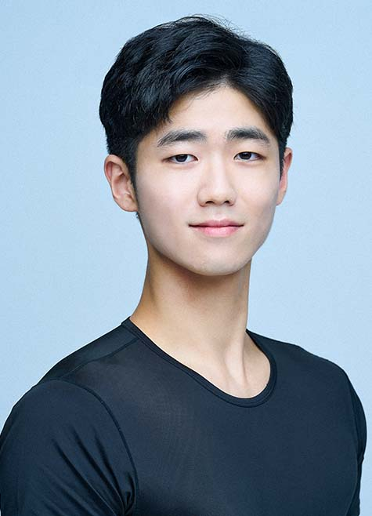

PERFORMANCE
발레Ballet
<Pavane>
작품내용
1986년 3월 2일 민병수, 김경희에 의해 안무되어 문예회관 대극장(현, 아르코예술극장)에서 초연된 작품으로, 바바라 스트라이잰스(B. Streisand)의 노래로 편곡된 음악에 맞추어 구성된 작품이다.
- 지도교수 |
- 김경희
- 안무 |
- 민병수, 김경희
- 원곡|
- Gabriel Fauré, 「Pavane, Op. 50」
- 편곡|
- Barbra Streisand, Claus Ogerman & Columbia Symphony Orchestra
- 출연 |
- 박진현, 김윤주
